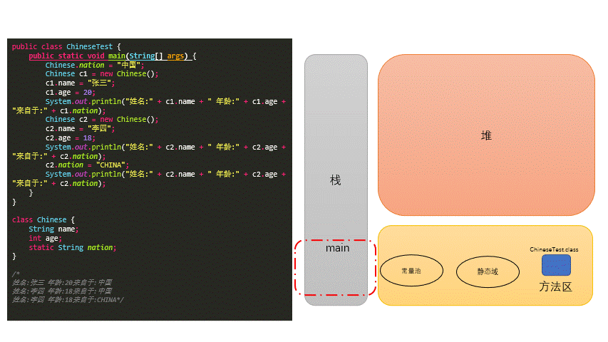

10. 面对对象-下¶
10.1. 关键字：static¶
10.1.1. static:静态的¶
作用：
主要用来修饰类的内部结构
可以用来修饰的结构
属性
方法
代码块
内部类
10.1.2. static修饰属性¶
静态变量（或类变量）
属性，是否使用
static修饰，又分为：静态属性(
python中又称为类属性 是定义在类内部的可以通过类.属性直接获取)非静态属性(实例变量)(
python中又称为实例属性 是定义在类中__init__方法中的，需要实例化后才能或取)
实例变量：创建了类的多个对象，每个对象都独立的拥一套类中的非静态属性。当修改其中一个对象中的非静态属性时，不会导致其他对象中同样的属性值的修改。
静态变量：创建了类的多个对象，多个对象共享同一个静态变量。当通过某一个对象修改静态变量时，会导致其他对象调用此静态变量时，是修改过了的。
static修饰属性的其他说明：静态变量随着类的加载而加载。可以通过
类.静态变量的方式进行调用静态变量的加载要早于对象的创建。
由于类只会加载一次，则静态变量在内存中也只会存在一份：存在方法区的静态域中。
区别(类与对象直接
.获取变量)
| 类变量 | 实例变量 | |
|---|---|---|
| 类 | yes | no |
| 对象 | yes | yes |
类变量和实例变量的内存解析

10.1.3. static修饰方法：¶
静态方法、类方法
随着类的加载而加载，可以通过
类.静态方法的方式进行调用
| 静态方法 | 非静态方法 | |
|---|---|---|
| 类 | yes | no |
| 对象 | yes | yes |
static的注意点：
在静态的方法内，不能使用this关键字、super关键字
10.1.4. 如何判定属性和方法应该使用static关键字：¶
关于属性
属性是可以被多个对象所共享的，不会随着对象的不同而不同的。
类中的常量也常常声明为static
关于方法
操作静态属性的方法，通常设置为static的
工具类中的方法，习惯上声明为static的。 比如：Math、Arrays、Collections
10.1.5. 设计模式¶
设计模式是在大量的实践中总结和理论化之后优的代码结构、编程风格、以及解决问题的思考方式。
常用设计模式 — 23种经典的设计模式 GOF
创建型模式，共5种：工厂方法模式、抽象工厂模式、单例模式、建造者模式、原型模式。
结构型模式，共7种：适配器模式、装饰器模式、代理模式、外观模式、桥接模式、组合模式、享元模式。
行为型模式，共11种：策略模式、模板方法模式、观察者模式、迭代器模式、责任链模式、命令模式、备忘录模式、状态模式、访问者模式、中介者模式、解释器模式。
10.1.6. 单例模式¶
所谓类的单例设计模式，就是采取一定的方法保证在整个的软件系统中，对某个类只能存在一个对象实例。
分类
懒汉式
// 懒汉式 (非线程安全) class Order{ //1.私化类的构造器 private Order(){ } //2.声明当前类对象，没初始化 //4.此对象也必须声明为static的 private static Order instance = null; //3.声明public、static的返回当前类对象的方法 public static Order getInstance(){ if(instance == null){ instance = new Order(); } return instance; } }
饿汉式
// 饿汉式1： class Bank{ //1.私化类的构造器 private Bank(){ } //2.内部创建类的对象 //4.要求此对象也必须声明为静态的 private static Bank instance = new Bank(); //3.提供公共的静态的方法，返回类的对象 public static Bank getInstance(){ return instance; } } // 饿汉式2：使用了静态代码块 class Order{ //1.私化类的构造器 private Order(){ } //2.声明当前类对象，没初始化 //4.此对象也必须声明为static的 private static Order instance = null; static{ instance = new Order(); } //3.声明public、static的返回当前类对象的方法 public static Order getInstance(){ return instance; } }
两种方式的对比：
饿汉式：
坏处：对象加载时间过长。
好处：饿汉式是线程安全的
懒汉式：
好处：延迟对象的创建。
目前的写法坏处：线程不安全。
10.2. main()的使用说明¶
10.2.1. main()说明:¶
main()方法作为程序的入口main()方法也是一个普通的静态方法main()方法可以作为我们与控制台交互的方式。（之前：使用Scanner）
10.2.2. 如何将控制台获取的数据传给形参：String[] args:¶
运行时：java 类名 参数Strings列表
10.2.3. main方法解析¶
public static void main(String[] args){
//方法体
}
权限修饰符：
private ,缺省, protected ,pubilc—->封装性修饰符：
static , final , abstract ,native可以用来修饰方法返回值类型：
void无返回值 / 有返回值 –>return方法名：需要满足标识符命名的规则、规范。
见名知意形参列表：重载 vs 重写；参数的值传递机制；体现对象的多态性
方法体：来体现方法的功能
10.3. 类的结构：代码块¶
10.3.1. 类的成员之四：¶
代码块(初始化块)
作用：用来初始化类、对象的信息
分类(代码块要是使用修饰符，只能使用
static):静态代码块
内部可以输出语句
随着类的加载而执行,而且只执行一次
作用：初始化类的信息
如果一个类中定义了多个静态代码块，则按照声明的先后顺序执行
静态代码块的执行要优先于非静态代码块的执行
静态代码块内只能调用静态的属性、静态的方法，不能调用非静态的结构
非静态代码块
内部可以输出语句
随着对象的创建而执行
每创建一个对象，就执行一次非静态代码块
作用：可以在创建对象时，对对象的属性等进行初始化
如果一个类中定义了多个非静态代码块，则按照声明的先后顺序执行
非静态代码块内可以调用静态的属性、静态的方法，或非静态的属性、非静态的方法
10.3.2. 程序中成员变量赋值的执行顺序¶
声明成员变量的默认初始化
显式初始化、多个初始化块依次被执行（同级别下按先后顺序执行）
构造器再对成员进行初始化操作
通过”对象.属性”或”对象.方法”的方式，可多次给属性赋值
10.3.3. 实例化子类对象时，构造器的加载顺序：¶
由父及子，静态先行。
class Root{ static{ System.out.println("Root的静态初始化块"); } { System.out.println("Root的普通初始化块"); } public Root(){ System.out.println("Root的无参数的构造器"); } } class Mid extends Root{ static{ System.out.println("Mid的静态初始化块"); } { System.out.println("Mid的普通初始化块"); } public Mid(){ System.out.println("Mid的无参数的构造器"); } public Mid(String msg){ //通过this调用同一类中重载的构造器 this(); System.out.println("Mid的带参数构造器，其参数值：" + msg); } } class Leaf extends Mid{ static{ System.out.println("Leaf的静态初始化块"); } { System.out.println("Leaf的普通初始化块"); } public Leaf(){ //通过super调用父类中有一个字符串参数的构造器 super("啦啦啦"); System.out.println("Leaf的构造器"); } } public class Main{ public static void main(String[] args){ new Leaf(); } } /*Root的静态初始化块 Mid的静态初始化块 Leaf的静态初始化块 Root的普通初始化块 Root的无参数的构造器 Mid的普通初始化块 Mid的无参数的构造器 Mid的带参数构造器，其参数值：啦啦啦 Leaf的普通初始化块 Leaf的构造器*/
案例二
class Father { static { System.out.println("11111111111"); } { System.out.println("22222222222"); } public Father() { System.out.println("33333333333"); } } public class Son extends Father { static { System.out.println("44444444444"); } { System.out.println("55555555555"); } public Son() { System.out.println("66666666666"); } public static void main(String[] args) { // 由父及子 静态先行 System.out.println("77777777777"); System.out.println("************************"); new Son(); System.out.println("************************"); new Son(); System.out.println("************************"); new Father(); } } /* 11111111111 44444444444 77777777777 ************************ 22222222222 33333333333 55555555555 66666666666 ************************ 22222222222 33333333333 55555555555 66666666666 ************************ 22222222222 33333333333*/
10.4. 关键字：final¶
10.4.1. final：最终的¶
可以用来修饰：类、方法、变量
10.4.2. final 用来修饰一个类:¶
此类不能被其他类所继承。
比如：
String类、System类、StringBuffer类
10.4.3. final 用来修饰方法：¶
表明此方法不可以被重写
比如：
Object类中getClass();
10.4.4. final 用来修饰变量：¶
此时的
变量就称为是一个常量final修饰属性：可以考虑赋值的位置：显式初始化、代码块中初始化、构造器中初始化final修饰局部变量：尤其是使用
final修饰形参时，表明此形参是一个常量。当我们调用此方法时，给常量形参赋一个实参。一旦赋值以后，就只能在方法体内使用此形参，但不能进行重新赋值。
static final用来修饰属性：全局常量
10.5. 关键字：abstract¶
10.5.1. abstract: 抽象的¶
可以用来修饰：类、方法
10.5.2. abstract修饰类：¶
抽象类
此类不能实例化
抽象类中一定有构造器，便于子类实例化时调用（涉及：子类对象实例化的全过程）
抽象的使用前提：继承性
10.5.3. abstract修饰方法：¶
抽象方法
抽象方法只方法的声明，没方法体
包含抽象方法的类，一定是一个抽象类。反之，抽象类中可以没有抽象方法的。
若子类重写了父类中的所的抽象方法后，此子类方可实例化；若子类没重写父类中的所的抽象方法，则此子类也是一个抽象类，需要使用
abstract修饰注意:
abstract不能用来修饰：属性、构造器等结构abstract不能用来修饰私方法、静态方法、final的方法、final的类
举例
abstract class GeometricObject{ public abstract double findArea(); } class Circle extends GeometricObject{ private double radius; public double findArea(){ return 3.14 * radius * radius; }; }
10.5.4. 模板方法的设计模式¶
当功能内部一部分实现是确定的，一部分实现是不确定的。这时可以把不确定的部分暴露出去，让子类去实现。
换句话说，在软件开发中实现一个算法时，整体步骤很固定、通用，这些步骤已经在父类中写好了。但是某些部分易变，易变部分可以抽象出来，供不同子类实现。这就是一种模板模式。
举例：
abstract class Template{ //计算某段代码执行所需要花费的时间 public void spendTime(){ long start = System.currentTimeMillis(); this.code();//不确定的部分、易变的部分 long end = System.currentTimeMillis(); System.out.println("花费的时间为：" + (end - start)); } public abstract void code(); } class SubTemplate extends Template{ @Override public void code() { for(int i = 2;i <= 1000;i++){ boolean isFlag = true; for(int j = 2;j <= Math.sqrt(i);j++){ if(i % j == 0){ isFlag = false; break; } } if(isFlag){ System.out.println(i); } } } }
模板方法设计模式是编程中经常用得到的模式。各个框架、类库中都有他的影子，比如常见的有：
数据库访问的封装
Junit单元测试JavaWeb的Servlet中关于doGet/doPost方法调用Hibernate中模板程序Spring中JDBCTemlate、HibernateTemplate等
10.6. 关键字：interface¶
10.6.1. interface:接口¶
接口就是规范，定义的是一组规则，体现了现实世界中“如果你是/要…则必须能…”的思想。继承是一个”是不是”的关系，而接口实现则是 “能不能” 的关系。
接口的本质是契约，标准，规范，就像我们的法律一样。制定好后大家都要遵守。
接口使用
interface来定义Java中，接口和类是并列的两个结构接口中的成员
JDK7及以前：只能定义全局常量和抽象方法全局常量：
public static final但是书写时，可以省略不写抽象方法：
public abstract
JDK8：除了定义全局常量和抽象方法之外，还可以定义静态方法、默认方法（略)
接口中不能定义构造器的！意味着接口不可以实例化
Java开发中，接口通过让类去实现(implements)的方式来使用如果实现类覆盖了接口中的所抽象方法，则此实现类就可以实例化
如果实现类没覆盖接口中所的抽象方法，则此实现类仍为一个抽象类
Java类可以实现多个接口 —>弥补了Java单继承性的局限性格式：
class AA extends BB implements CC,DD,EE
接口与接口之间可以继承，而且可以多继承
接口的具体使用，体现多态性
10.6.2. 举例¶

class Computer{
public void transferData(USB usb){//USB usb = new Flash();
usb.start();
System.out.println("具体传输数据的细节");
usb.stop();
}
}
interface USB{
//常量：定义了长、宽、最大最小的传输速度等
void start();
void stop();
}
class Flash implements USB{
@Override
public void start() {
System.out.println("U盘开启工作");
}
@Override
public void stop() {
System.out.println("U盘结束工作");
}
}
class Printer implements USB{
@Override
public void start() {
System.out.println("打印机开启工作");
}
@Override
public void stop() {
System.out.println("打印机结束工作");
}
}
总结：
接口使用上也满足多态性
接口，实际上就是定义了一种规范
开发中，体会面向接口编程！
10.6.3. Java8中关于接口的新规范¶
静态方法：使用
static关键字修饰。可以通过接口直接调用静态方法，并执行其方法体。我们经常在相互一起使用的类中使用静态方法。你可以在标准库中找到像Collection/Collections或者Path/Paths这样成对的接口和类。默认方法：默认方法使用
default关键字修饰。可以通过实现类对象来调用。我们在已有的接口中提供新方法的同时，还保持了与旧版本代码的兼容性。比如：java 8 API中对Collection、List、Comparator等接口提供了丰富的默认方法。接口中定义的静态方法，只能通过接口来调用。
通过实现类的对象，可以调用接口中的默认方法。
如果实现类重写了接口中的默认方法，调用时，仍然调用的是重写以后的方法
如果子类(或实现类)继承的父类和实现的接口中声明了同名同参数的默认方法，那么子类在没重写此方法的情况下，默认调用的是父类中的同名同参数的方法。–>类优先原则
如果实现类实现了多个接口，而这多个接口中定义了同名同参数的默认方法，
那么在实现类没重写此方法的情况下，报错。–>接口冲突。
这就需要我们必须在实现类中重写此方法
如何在子类(或实现类)的方法中调用父类、接口中被重写的方法。
public void myMethod(){ method3();//调用自己定义的重写的方法 super.method3();//调用的是父类中声明的 //调用接口中的默认方法 CompareA.super.method3(); CompareB.super.method3(); }
10.6.4. 匿名对象 、匿名接口¶
public class Interface {
public static void main(String[] args) {
// java8 interface 知识点1：接口中定义的静态方法，只能通过接口来调用
USB.method1();
Flash flash1 =new Flash();
// 知识点2：通过实现类的对象，可以调用接口中的默认方法。
// 如果实现类重写了接口中的默认方法，调用时调用的是重写后的方法
flash1.method2();
// 知识点3：如果子类(实现类)继承了父类和实现了接口中声明的同名同参数默认方法
// 那么子类在没有重写的情况下，默认调用的是父类中的同名同参数方法 ----> 类优先原则
// 知识点4:如果实现类实现了多个接口，而这多个接口中定义了同名同参数的默认方法，
// 那么在实现类没有重写此方法的情况下，报错。-->接口冲突
// 解决方法：重写
// 知识点5：
// 子类中定义方法 调用重写的方法 method();
// 调用父类的方法 super.method();
// 调用接口中的默认方法。接口名.super.method();
Computer com = new Computer();
// 1.0 创建了接口的非匿名实现类的非匿名对象
Flash flash = new Flash();
com.transferData(flash);
// 2.0 创建了接口的非匿名实现类的匿名对象
com.transferData(new Printer());
// 3.0 创建了接口的匿名实现类的非匿名对象
USB phone = new USB(){
@Override
public void start() {
System.out.println("手机开始工作");
}
@Override
public void stop() {
System.out.println("手机结束工作");
}
};
com.transferData(phone);
// 4.0 创建了接口的匿名实现类的匿名对象
com.transferData(new USB(){
@Override
public void start() {
System.out.println("MP3开始工作");
}
@Override
public void stop() {
System.out.println("MP3结束工作");
}
});
}
}
class Computer {
public void transferData(USB usb) {//USB usb = new Flash();
usb.start();
System.out.println("具体传输数据的细节");
usb.stop();
}
}
interface USB {
//常量：定义了长、宽、最大最小的传输速度等
static void method1(){
System.out.println("USB_static_method1");
}
default void method2(){
System.out.println("USB_default_method2");
}
void start();
void stop();
}
class Flash implements USB {
@Override
public void start() {
System.out.println("U盘开启工作");
}
@Override
public void stop() {
System.out.println("U盘结束工作");
}
}
class Printer implements USB {
@Override
public void start() {
System.out.println("打印机开启工作");
}
@Override
public void stop() {
System.out.println("打印机结束工作");
}
}
10.6.5. 代理模式¶
代理模式是Java开发中使用较多的一种设计模式。代理设计就是为其他对象提供一种代理以控制对这个对象的访问。
举例：
interface NetWork{ public void browse(); } //被代理类 class Server implements NetWork{ @Override public void browse() { System.out.println("真实的服务器访问网络"); } } //代理类 class ProxyServer implements NetWork{ private NetWork work; public ProxyServer(NetWork work){ this.work = work; } public void check(){ System.out.println("联网之前的检查工作"); } @Override public void browse() { check(); work.browse(); } }
应用场景：
安全代理：屏蔽对真实角色的直接访问。
远程代理：通过代理类处理远程方法调用（RMI）
延迟加载：先加载轻量级的代理对象，真正需要再加载真实对象
分类
静态代理（静态定义代理类）
动态代理（动态生成代理类）
JDK自带的动态代理，需要反射等知识
10.6.6. 工厂的设计模式¶
实现了创建者与调用者的分离，即将创建对象的具体过程屏蔽隔离起来，达到提高灵活性的目的。
具体模式
简单工厂模式：用来生产同一等级结构中的任意产品。（对于增加新的产品，需要修改已有代码）
工厂方法模式：用来生产同一等级结构中的固定产品。（支持增加任意产品)
抽象工厂模式：用来生产不同产品族的全部产品。（对于增加新的产品，无能为力；支持增加产品族)
10.6.7. 接口和抽象类之间的区别：¶
| 区别点 | 抽象类 | 接口 |
|---|---|---|
| 定义 | 包含抽象方法的类 | 主要是抽象方法和全局常量的集合 |
| 组成 | 构造方法、抽象方法、普通方法、常量、变量 | 常量、抽象方法、(jdk8.0:默认方法、静态方法) |
| 使用 | 子类继承抽象类(extends) | 子类实现接口(implements) |
| 关系 | 抽象类可以实现多个接口 | 接口不能继承抽象类，但允许继承多个接口 |
| 设计模式 | 模板方法 | 简单工厂、工厂方法、代理模式 |
| 对象 | 都通过对象的多态性产生实例化对象 | 都通过对象的多态性产生实例化对象 |
| 局限 | 抽象类有单继承的局限 | 接口没有此局限 |
| 实际 | 作为一个模板 | 是作为一个标准或是表示一种能力 |
| 选择 | 如果抽象类和接口都可以使用的话，优先使用接口，因为避免单继承的局限 | 如果抽象类和接口都可以使用的话，优先使用接口，因为避免单继承的局限 |
10.7. 类的结构：内部类¶
10.7.1. 内部类：类的第五个成员¶
Java中允许将一个类A声明在另一个类B中，则类A就是内部类，类B称为外部类.内部类的分类：
成员内部类（静态、非静态 ）
局部内部类(方法内、代码块内、构造器内)
成员内部类的理解：
一方面，作为外部类的成员：
调用外部类的结构
可以被
static修饰可以被4种不同的权限修饰
另一方面，作为一个类：
类内可以定义属性、方法、构造器等
可以被
final修饰，表示此类不能被继承。言外之意，不使用final，就可以被继承可以被
abstract修饰
10.7.2. 内部类代码理解¶
public class InnerClass {
public static void main(String[] args) {
// 创建(静态成员内部类)
Zoo.Monkey monkey = new Zoo.Monkey();
monkey.climb();
// 创建(非静态成员内部类)
Zoo zoo = new Zoo();
Zoo.Bird bird = zoo.new Bird("麻雀");
bird.sing();
bird.display("黄鹂");
}
}
class Zoo {
String name;
String kinds;
public Zoo() {
}
public Zoo(String name, String kinds) {
// 局部内部类 -- 构造器
this.name = name;
this.kinds = kinds;
class B {
}
}
{
// 局部内部类->代码块
class C {
}
}
// 静态成员内部类
static class Monkey {
String name;
public Monkey() {
}
public Monkey(String name) {
this.name = name;
}
public void climb() {
System.out.println("猴子爬树");
}
}
// 非静态成员内部类
class Bird {
String name;
public Bird() {
}
public Bird(String name) {
this.name = name;
}
public void sing() {
System.out.println("我是一只小小小小鸟~~~");
Zoo.this.eat();
}
public void display(String name) {
System.out.println(name);
System.out.println(this.name); // 内部属性
System.out.println(Zoo.this.name); // 外部属性
}
}
public void method() {
// 局部内部类-方法
class A {
}
}
public void eat() {
System.out.println("动物吃东西");
}
}
10.7.3. 如何在成员内部类中调用外部类的结构？¶
class Person{
String name = "小明";
public void eat(){
}
//非静态成员内部类
class Bird{
String name = "杜鹃";
public void display(String name){
System.out.println(name);//方法的形参
System.out.println(this.name);//内部类的属性
System.out.println(Person.this.name);//外部类的属性
//Person.this.eat();
}
}
}
10.7.4. 局部内部类的使用¶
//返回一个实现了Comparable接口的类的对象
public Comparable getComparable(){
//创建一个实现了Comparable接口的类:局部内部类
//方式一：
class MyComparable implements Comparable{
@Override
public int compareTo(Object o) {
return 0;
}
}
return new MyComparable();
//方式二：
return new Comparable(){
@Override
public int compareTo(Object o) {
return 0;
}
};
}
10.7.5. 成员内部类和局部内部类，在编译以后，都会生成字节码文件。¶
成员内部类：外部类$内部类名.class
局部内部类：外部类$数字 内部类名.class
10.8. 关键字:native¶
10.8.1. native 关键的理解¶
使用 native 关键字说明这个方法是原生函数，也就是这个方法是用
C/C++等非Java语言实现的，并且被编译成了DLL，由java去调用。
java使用起来非常方便，然而有些层次的任务用java实现起来不容易，或者我们对程序的效率很在意时，问题就来了。例如：有时java应用需要与java外面的环境交互。这是本地方法存在的主要原因，你可以想想 java 需要与一些底层系统如操作系统或某些硬件交换信息时的情况。本地方法正是这样一种交流机制：它为我们提供了一个非常简洁的接口，而且我们无需去了解java应用之外的繁琐的细节。native声明的方法，对于调用者，可以当做和其他Java方法一样使用 一个native method方法可以返回任何java类型，包括非基本类型，而且同样可以进行异常控制。native method的存在并不会对其他类调用这些本地方法产生任何影响，实际上调用这些方法的其他类甚至不知道它所调用的是一个本地方法。JVM将控制调用本地方法的所有细节。如果一个含有本地方法的类被继承，子类会继承这个本地方法并且可以用
java语言重写这个方法（如果需要的话）。